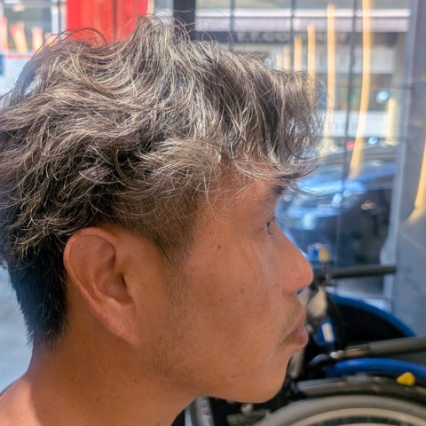

広島から ／ 地球活性化実行委員会
障がいがあっても、なくても。
自然につながれる場所を、広島に増やしたい。
地球活性化実行委員会は、電動車椅子で暮らす岡ちゃんの呼びかけで始まった広島の市民グループです。広島のまちで、誰もが気軽に集まり、知り合い、助け合える場所づくりに取り組んでいます。
ABOUT
呼びかけ人 岡ちゃん

広島在住。電動車椅子で生活しています。生活保護を受けながら暮らす中で、制度や支援だけでは埋まらない「人とのつながり」の大切さを実感してきました。
だからこそ、障がいの有無に関係なく、同じ場所で笑い合える機会を自分の手でつくりたい。地域の皆さんと一緒に、小さな一歩から始めています。
日々の活動は Instagram（@ayu19841002）で発信しています。
EVENT
夢フェスに出演します
2026年11月1日（日）
- 会場
- アリスガーデン（広島市中区）
- 内容
- 「ゆめのたね」主催の公開収録イベント「夢フェス」に、ゲストとして出演します。
- 時間
- 14:40〜
JOIN US
夢フェス・地球活性化実行委員会
仲間を募集しています
できることを、できる時間だけ。障がいのある方も、ない方も、どなたでも歓迎です。
SNS・撮影
活動の写真や動画を撮って発信
応援メンバー
LINEグループで情報を受け取り、イベントに参加
BLOG
活動ブログ
ありが党 ネット街頭演説 第25回｜災害のとき、逃げられますか？
ありが党のネット街頭演説、第25回のテーマは「災害のときの避難」。一人ひとりの避難を決めておく「個別避難計画」の今の状況（対象者の15.1%）と、広島県での進み具合、福祉避難所のこと、まだ決まっていない課題を、やさしく紹介します。
ありが党 ネット街頭演説 第23回｜年金、来年どうなる？
ありが党のネット街頭演説、第23回のテーマは「年金」。今年の改定（基礎年金1.9%・厚生年金2.0%の引き上げ）と、物価より上がり幅が小さいこと、来年の改定はまだ決まっていないことを、やさしく紹介します。
ありが党 ネット街頭演説 第24回｜子育ての負担、軽くなる？
ありが党のネット街頭演説、第24回のテーマは「子育て」。今年から始まった支援（児童手当・高校授業料・小学校の給食費）と、まだ途中の話（中学校の給食費）について、やさしく紹介します。
ありが党 ネット街頭演説 第22回｜12月3日から「障害者週間」、知っていますか？
ありが党のネット街頭演説、第22回のテーマは「障害者週間」。12月3日から9日は、法律で決められた「障害者週間」。なぜこの1週間なのか、だれでも無料で見られるオンラインセミナーのことを紹介します。
ありが党 ネット街頭演説 第21回｜物価、いつ落ち着く？
ありが党のネット街頭演説、第21回のテーマは「物価」。9月の消費者物価（前年同月比2.1%上昇）と、給付・減税の法案の審議の現在地について、やさしく紹介します。
ARIGATOU
岡ちゃんのもうひとつの活動「ありが党」
CONTACT